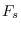
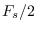

Next: November – Digital Filtering Up: Blog posts 2021 Previous: September – The Universality Contents
Fast fourier transform (FFT) is an algorithm that computes the discrete Fourier transform.
FFT is especially handy in real-time digital signal processing. Digital computers are working on discrete data, thus a input signal is always sampled with some sampling rate  (Hz). By the Nyquist-Shannon sampling theorem, sampling captures frequencies under .
Octave calculates the FFT of a discrete signal. In the following code, we calculate the normalized FFT and plot the frequency spectrum w.r.t. the frequency. Signal vector and sampling frequency are given as input.
##Calculates the FFT and plots the frequency spectrum of a signal. Sampletimes have to start at time 0.
function fftvector = plotfft(signal, Fs)
N = length(signal); #Signal length.
FFT = fft(signal);
if(mod(N,2) == 0) #Check if signal length is odd or even.
FFT = 2*FFT(1 : N/2)/N;
f = Fs*(0 : (N - 1)/2)/(N - 1);
else
FFT = 2*FFT(1 : (N - 1)/2)/N;
f = Fs*(0 : (N - 2)/2)/(N - 1);
end
fftvector = [f; FFT];
figure(1)
plot(f, abs(FFT));
title('Fast fourier transform')
xlabel('Frequency (Hz)')
print plot.jpg
end
The following figure shows my track Tappimarssi in the frequency domain. The track was imported to Octave by
[signal, Fs] = audioread('Tappimarssi.wav');